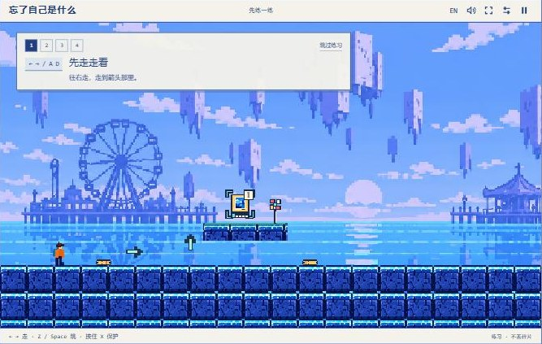
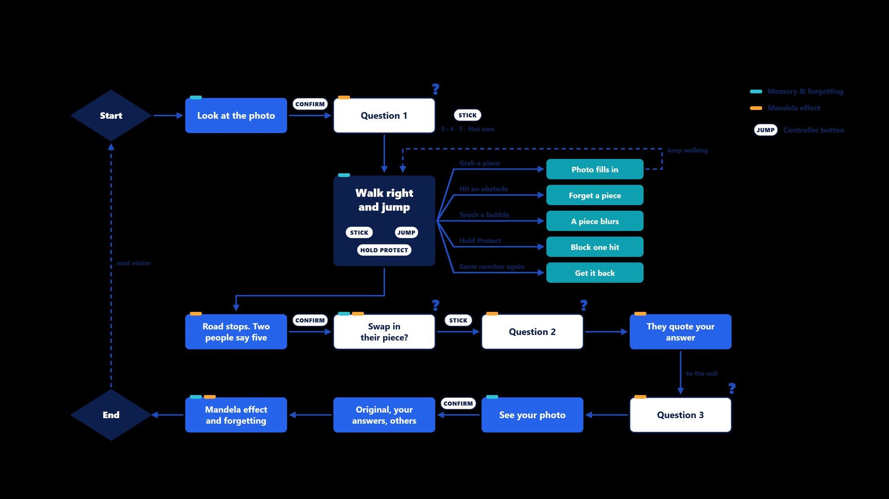
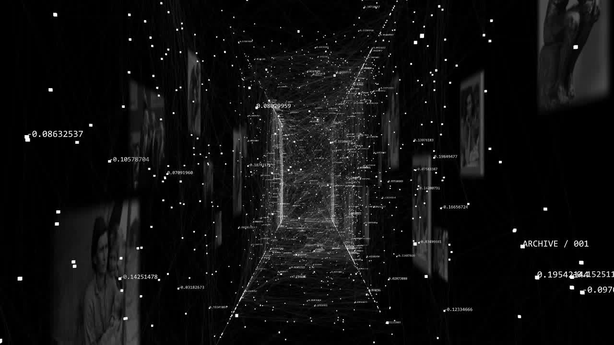
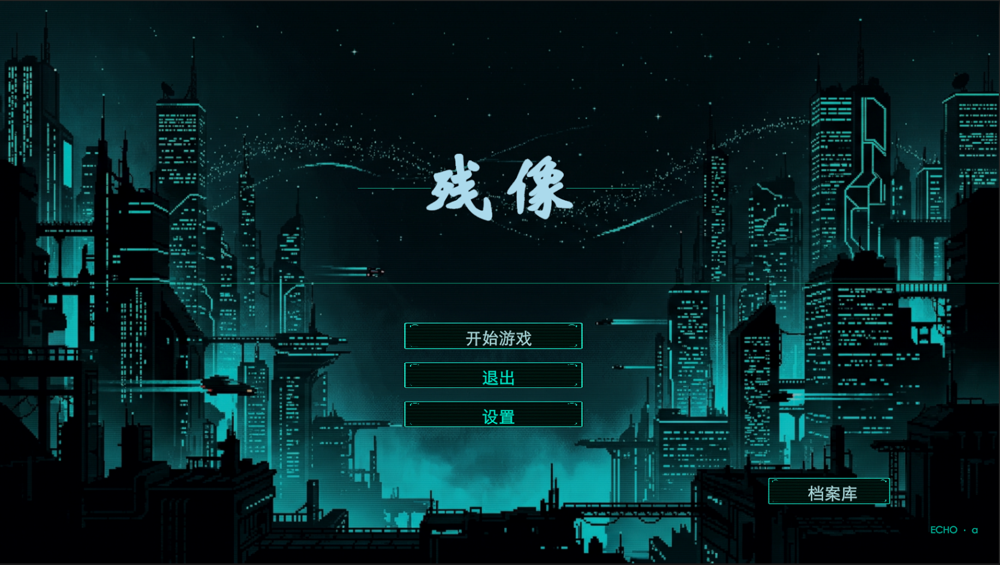
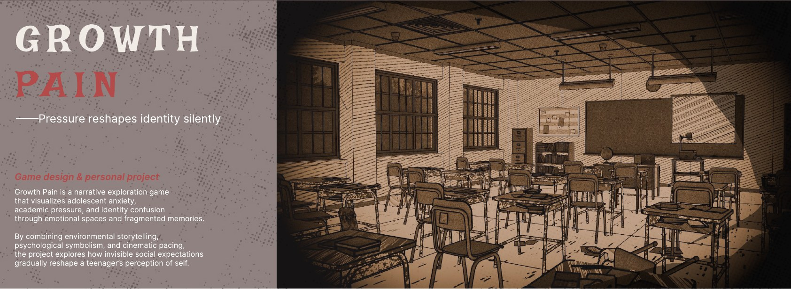
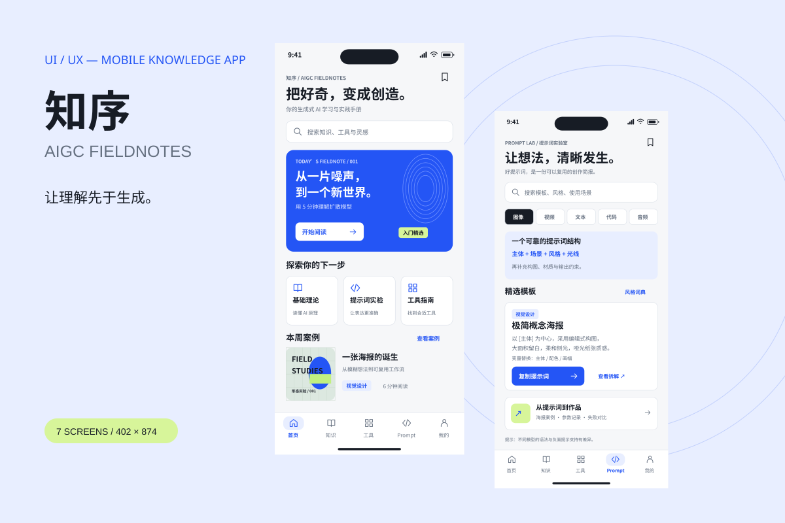

Fieldnotes.
在游戏、影像与交互之间，把好奇心变成可以感知的体验。主要方向是游戏场景、AIGC、UI/UX 与互动装置——这里收藏作品，也留下思考的痕迹。 Across games, moving images and interaction, I turn curiosity into experiences people can feel. Game environments, AIGC, UI/UX and installations — a collection of work, and the thinking behind it.
Memory Drift.
《忘了自己是什么》 · 互动装置 + 像素游戏 + TD 影像What Was I Again? · Installation + pixel game + TD film
一件围绕“遗忘是缺陷，还是自我保护”的互动装置。观众先看一张照片，再在旅途中收集它的碎片，并被反复问到同一个问题。 An interactive installation asking whether forgetting is a defect or a form of self-protection. Visitors study one photograph, collect its fragments on a journey, and are asked the same question again and again.
“照片里，到底有几个人？”“How many people were in the photo?”

480 × 270 像素画布 · 横屏 16:9 · 一根摇杆、六个按钮的展陈机台480 × 270 pixel canvas · 16:9 landscape · one joystick, six buttons on the exhibition cabinet
照片被切成五条固定位置的碎片：撞到障碍会丢失最新的一片，干扰会让最旧的一片变模糊。The photo is split into five fixed strips: a collision loses the newest piece, interference blurs the oldest one.
看一张照片，先回答一次Look once, answer once
3 · 4 · 5 · 不确定。第一次回答会在任何暗示之前被记录下来。3 · 4 · 5 · Not sure. The first answer is recorded before any suggestion appears.
在路上收集、遗失、保护碎片Collect, lose and protect fragments
向右走、跳跃，按住保护挡住一次冲击。保留下来的碎片，就是结尾你能看到的部分。Walk right, jump, hold Protect to block one hit. Whatever you keep is what you get to see at the end.
两个人说：是五个Two people say: five
虚构角色 Lin 与 Rowan 会引用你的第二次回答并彼此回应；记录墙上则是此前观众真实的回答。Fictional characters Lin and Rowan quote your second answer and reply to each other; the record wall shows real answers from earlier visitors.
揭晓原图，不打分Reveal the original — no score
先回看你留下的碎片，再揭晓原图，并置三次回答；最后谈曼德拉效应，把“遗忘是否有价值”留给观众。Review the pieces you kept, then reveal the original beside your three answers. A closing card on the Mandela effect leaves the value of forgetting open.


Selected files.
每一个文件，都是一次从想法到实践的尝试。Each file is an experiment, from idea to practice.
-
001
残像Afterimage
莉莉丝 Game Jam 2026 · 赛博朋克叙事解谜 · Unity 2DLilith Game Jam 2026 · Cyberpunk narrative puzzle · Unity 2D
命题「我的 AI 队友」。玩家扮演 ECHO，AI 伴侣「影」的行为由玩家自己的数据镜像驱动——你塑造了它，它也在重构你。10+ 场景、JSON 驱动的分支对话与自研 Editor 工具。Theme: “My AI Teammate”. You play ECHO, whose AI companion Shadow mirrors your own behaviour — you shape it, and it reshapes you. 10+ scenes, JSON-driven branching dialogue and a custom Editor tool.
-
002
生长痛Growth Pain
叙事探索游戏 · 个人项目 · UE · BlenderNarrative exploration game · Personal project · UE · Blender
围绕青春期焦虑、学业压力和身份认同。超现实的日常空间、碎片化记忆和分支对话，让玩家感受外部期待如何逐渐改变一个人的自我认知。About adolescent anxiety, academic pressure and identity. Surreal everyday spaces, fragmented memories and branching dialogue show how expectations reshape a sense of self.
-
007
知序 · AIGC 知识库Zhixu · AIGC Fieldnotes
UI / UX · 手机 App · FigmaUI / UX · Mobile app · Figma
围绕 AIGC 学习与知识整理的手机应用。七页界面串联知识、工具、Prompt 和个人内容，让发现、理解与再使用形成清晰路径。A mobile app for learning and organising AIGC. Seven screens connect knowledge, tools, prompts and personal content into one clear path.
-
005一颗印ARCHIVE
一颗印 · 马家大院档案Ma Courtyard Archive
云南传统建筑 · 信息可视化 · 2025Yunnan vernacular architecture · Information design · 2025三页信息图：马家大院的整体布局、「四水归堂」天井系统、房檐与斗拱、榫卯工艺及窗门楣纹样，把建筑结构变成可以阅读的信息。Three infographic pages on layout, the “four waters return to the hall” courtyard, eaves and brackets, joinery and window patterns — architecture made readable.
Behind the work.
- 01
创意与游戏策划Game & narrativeAfterimage · Growth Pain
从主题出发，组织核心规则、叙事分支与玩家选择。Turn a theme into rules, narrative branches and player choices.
- 02
用户与产品思考Product thinkingZhixu
整理使用场景、信息结构与内容路径，让界面服务于清楚的目标。Organise scenarios, information and paths around a clear purpose.
- 03
AI 应用与工作流AI workflowAfterimage
把素材生成、筛选与后期整合连接起来，关注最终表达。Connect generation, selection and post-production around the intended expression.
- 04
交互与技术实现Interaction & makingMemory Drift · Afterimage
通过 Unity、TouchDesigner 与 Web，将叙事和视觉想法变成运行中的体验，并做到可以展出的装置。Turn narrative and visual ideas into running experiences with Unity, TouchDesigner and the web — through to an exhibitable installation.
- 05
视觉与信息表达Visual communicationCourtyard Archive
以构图、字体、层级与媒介选择，把复杂内容组织为可读的信息。Use composition, type, hierarchy and media to make information readable.
- 06
反思与创作记录Reflection & processGrowth Pain
把作品放回问题与选择之中，说明设计意图、实现方式和可以继续探索的地方。Connect each outcome to its questions, choices and directions for further exploration.
Hi, I'm Siyu.
就读于昆明理工大学数字媒体艺术专业（2024 级），主要发展游戏场景、AIGC 与 UI/UX 设计，同时持续进行 TouchDesigner 交互、互动装置、展览空间与游戏角色设计实践。I study Digital Media Art at Kunming University of Science and Technology (class of 2024). My core directions are game environments, AIGC and UI/UX, alongside TouchDesigner, installations, exhibition spaces and character design.
我关注技术如何影响情绪与人的关系——每一个交互、每一帧画面，都是一种对话。I'm interested in how technology shapes emotion and human connection — every interaction, every frame, is a form of dialogue.
- STUDY昆明理工大学 · 数字媒体艺术KMUST · Digital Media Art
- FOCUSGame Env · AIGC · UI/UX · Interaction
- CERTAutodesk 3ds Max Visualization Designer
- COURSEArt and Design for SDGs · 2026
Let's talk.
可实习：2027 年 1 月 5 日至 2027 年 3 月中旬。欢迎交流项目合作、展览与作品反馈。Available for an internship from 5 January to mid-March 2027. Open to collaborations, exhibitions and portfolio feedback.
630388703@qq.com- PHONE138-8889-9756
- BILIBILIBV1D6dLBiExR ↗
- GITHUB630388703-sudo ↗
- CV下载简历 PDFDownload PDF
collect. connect. make something.